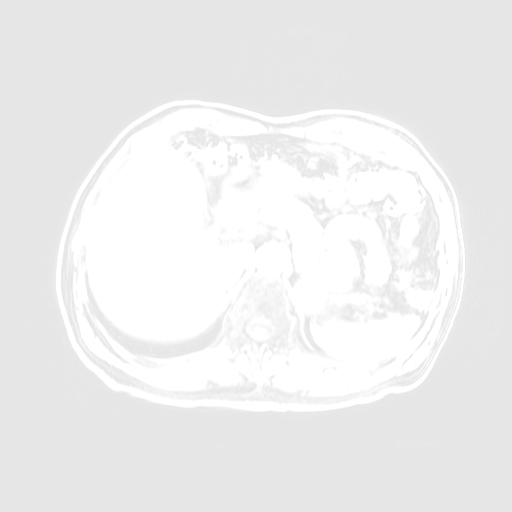

LUO^ShanHeng (ID: 0000000499)
2026-05-19 · M · 54Y
CUHK-ShenZhen Medical Centre
MR · WATER: BH Ax LAVA-Flex
50 mm
Im: 36 / 172 (Ser #4)
Loc: -64.20 mm · Thk: 3.0 mm
Zoom: 100% · PixelSpacing: 0.742 mm
WL: 40 WW: 400 [F2]
64K LUT: 0.03 ms
XY (284, 261) = 312 (Raw: 312)

LUO^ShanHeng
Ser #4 · High Contrast Window
MR · WATER LAVA-Flex
Im: 36 / 172
Loc: -64.20 mm · Thk: 3.0 mm
WL: -600 WW: 1500 [F3]
Cached · 0.02 ms
LUO^ShanHeng
Ser #4 · Inverted [I]
MR · MONOCHROME1 Emulation
Im: 36 / 172
Zoom: 100% · Rot: 0°
WL: 40 WW: 400 · INV
LI CHUN (李春) (ID: 3955198)
3328×4096 · 16-bit (12-stored) · 26.0 MB
MG · RCC Breast Screening
Full-Res Texture Ready (14.2 ms)
Im: 1 / 5
ImagerPixelSpacing: 0.070 mm (Imager)
WL: 2048 WW: 4096 [F1]
nautilus://vp/3/full (No-Mip)